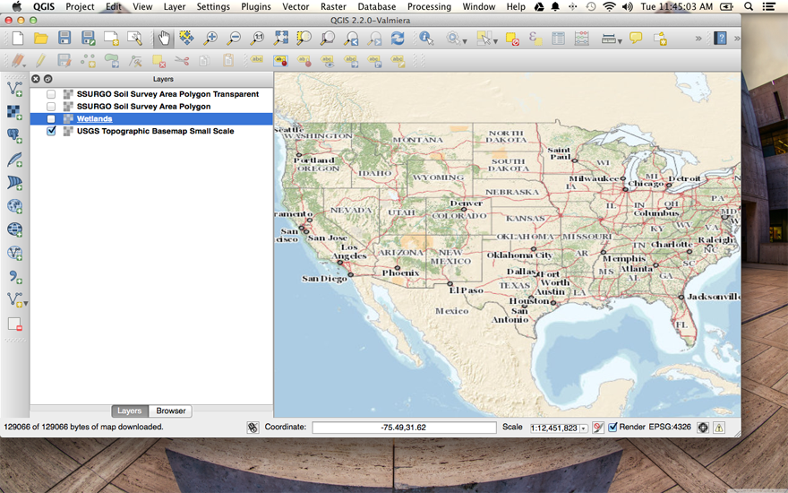
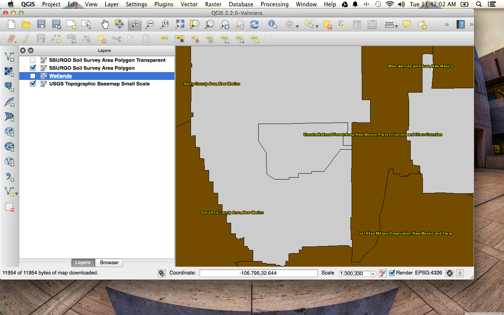
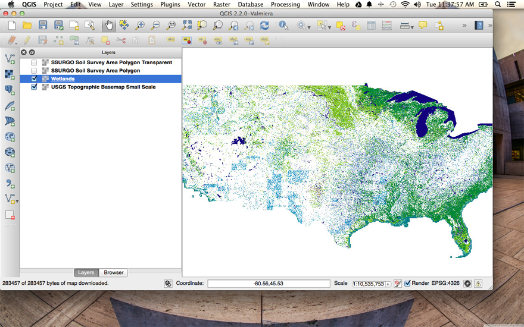
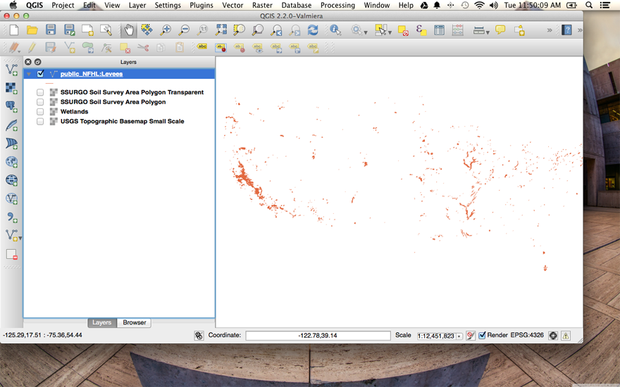
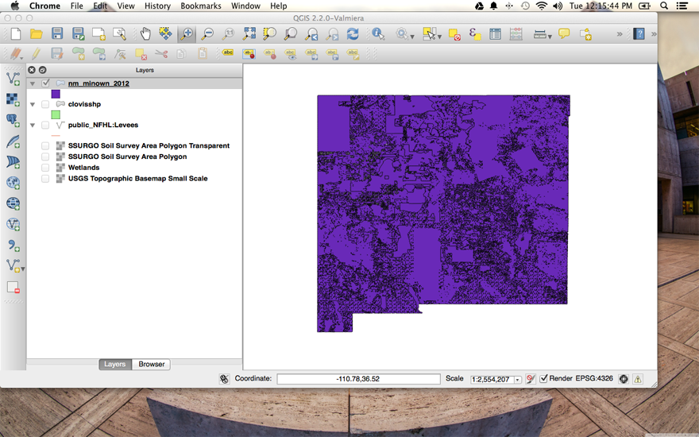

Elisa Cedillos
April 9 2014
Milestone 10
Question 1
Add three WMS layers to a new map project in QGIS, with one coming from each of the following collections of WMS services.
- USGS's National Maps Service Endpoints Page: http://viewer.nationalmap.gov/example/services/serviceList.html
- NRCS Soil Data Mart WMS Service: http://SDMDataAccess.nrcs.usda.gov/Spatial/SDM.wms?SERVICE=WMS&REQUEST=GetCapabilities
In your write-up include the names of the layers you added, which service they came from, and screen shots (one for for each of the added layers) showing each of them in the QGIS client interface
- 
Layer: 0 (Title: USGS Topographic Base Map Small Scale)
Service:WMS
- 
Layer: surveyareapoly
Service: WMS
- 
Layer: 0 (Title: wetlands)
Service: WMS
Question 2
Add three WFS layers to the same QGIS project, two based upon data available from the RGIS data browser (http://rgis.unm.edu/browsedata), and one based on the USGS GeoNames WFS service: http://services.nationalmap.gov/arcgis/services/WFS/geonames/MapServer/WFSServer?request=GetCapabilities&service=WFS
- 
Request:
Service:
Name: public_NFHL:Levees

Request:
Service:
Name: clovisshp
- 
Request:
Service:
Name: nm_minown_2012
- There is a lot of growth in small eastern New Mexico towns due to the oil industry. I want to use soil data ownership and land use information to determine what is happening in these areas. Is it just oil that is mostly present in these areas? Who else is using the land in New Mexico?
Question 2
Who is the target audience for the information you want to provide?
- I plan to provide this information to the basic user who is interested in New Mexico geography. I am assuming that this user is already familiar with the state, where I therefore do not need extensive description of the locations I will be looking at.
Question 3
What geographic region does you problem represent? Please describe it in words (e.g. New Mexico, Alberta Canada, etc.) and define it in terms of a geographic (WGS84)(latitude and longitude) bounding box.
- I found some data on Clovis region in New Mexico. This region is bounded by the Bounding Box: minx="-104" miny="33.9998" maxx="-103.039" maxy="34.9997"
Question 4
What types of data do you want to include in your project? Include a description (e.g. elevation data, hydrographic survey, etc.) and types (raster, vector).
- I want to include some raster data such as a base map to act as a reference to my project. However, I want to use multiple feature styles that are in vector format. These data include Land Use of the Clovis region (vector) and Land ownership of the state of New Mexico (vector).
Question 5
What projection will you use for the representation of your project data? Again, describe it, provide your reasoning, and corresponding EPSG code.
- I will use one of the common lat/long projection systems, USGS84, whose EPSG code is EPSG:4326. Some of my data will need to be converted to this projection, I'm sure.
Question 6
Where do you anticipate acquiring this data?
- Data I plan on using can come from RGIS and the USFS.